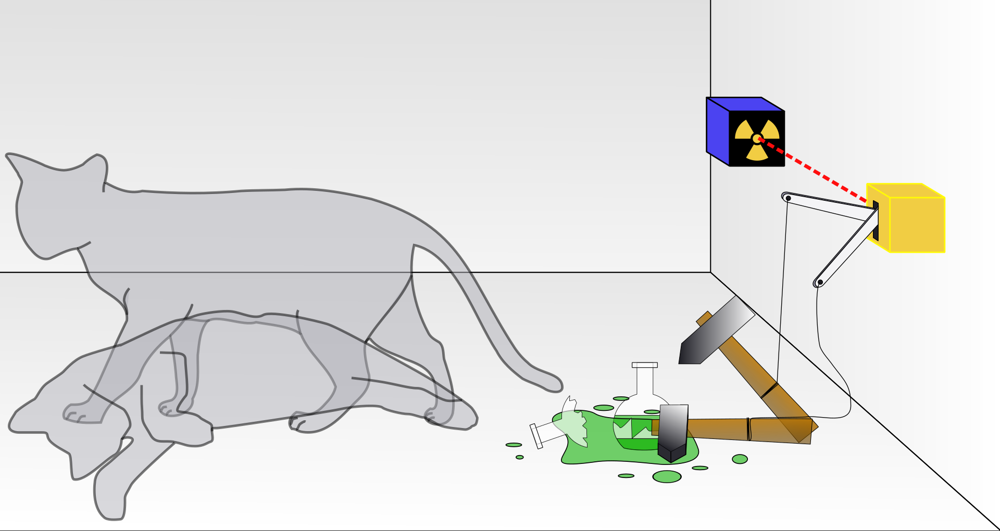

Schrödinger's cat
Nowadays, even the most uneducated person knows the name "quantum" even if they do not know what is that about. This term was first mentioned in 1900, when quantum mechanics was born.
At that moment, physicists were dealing with a problem physics had and they made a great breakthrough: particles does not behave as expected, they have an abnormal movement that not even today we are able to fully understand. The particle is not as simple as a simple point, they behave also as waves and, this phenomena was called "wave-particle duality".
Physicists observed a riveting behaviour, which turned out that was paramount to understand the new physics era: the particle behaves different depending whether something is observing it.
This is not the behaviour we would expect, is it? It wasthat vast the bewilderment of the scientist about that back then, that the most famous physicists as Albert Einstein or Erwing Schrödinger were deniers of this thinking, proposing ideas to deny this world.
One of the ideas they came up with was about the "quantum entanglement" which states that, if nothing can go faster than light, it is impossible the quantum entanglement since it consists of that two related particles, no matter how far away from each other they are, they have a "instantaneous communication", ergo, quantum mechanics is wrong.
Another and the most known one is the Schrödinger's cat. This consists of a cat being inside a closed box with a quantum machinary that has a particle with a probability of 50% to explode and free a poisonous gas that would kill the cat. Since this is in a quantum state, ergo the particle has and has not exploded yet at the same time, the cat has and has not died at the same time, which is a nonsense.

It was that big the discontent of the scientists that some participants on the theory longed to do not have participated on it at all.
Nonetheless, besides all of that, quantum mechanics is still active and is essential fro modern physics, having already disproved all the ideas these physicists used to deny it.